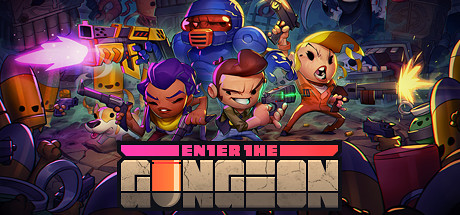

- 개요
- 프롤로그
- 상세

Enter The Gundgeon이란 무엇인가?
2016년 4월 5일 Dodge Roll에서 PC(스팀)과 PS4로,
2017년 4월 5일에 XBOX ONE, 2017년 12월 14일 닌텐도 스위치로 출시한
톱뷰 방식의 액션 슈팅 로그라이크 인디 게임이다.
발매한지 하루(2016년 4월 6일)만에 스팀 판매순위 1위에 올랐다.
공식 한글화가 되어 있지만, 게임을 처음 실행할 때는 영어로 나온다.
한글로 즐기고 싶다면 튜토리얼을 시작하기 전에 잊지 말고 설정에서 언어를
변경해주자.
다만 광산이 지뢰로 번역되어 있는 등 번역 상태가 미묘하게 안 좋은
부분이 있으며, 또 원문 자체가 애초에 번역이 힘든 말장난이 여럿 있으니
그것을 감안한다면 영어판으로 해도 관계 없다.